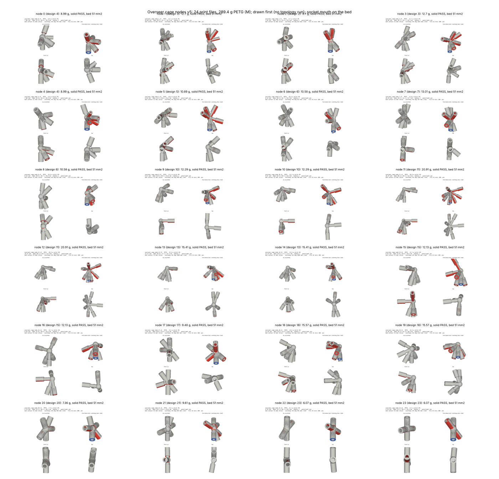

<title>Overseer Cage Nodes v5</title>
<style>
:root{--bg:#f6f7f8;--fg:#1d2329;--muted:#5d6872;--line:#d6dbe0}
@media (prefers-color-scheme:dark){:root:not([data-theme="light"]){--bg:#14181c;--fg:#e4e8ec;--muted:#9aa5ae;--line:#2c343b;color-scheme:dark}}
:root[data-theme="dark"]{--bg:#14181c;--fg:#e4e8ec;--muted:#9aa5ae;--line:#2c343b;color-scheme:dark}
body{background:var(--bg);color:var(--fg);font-family:system-ui,sans-serif;line-height:1.5;padding:24px 16px 48px}
main{max-width:1200px;margin:0 auto;display:grid;gap:14px}
h1{font-size:1.6rem;margin:0} p{margin:0;max-width:72ch;color:var(--muted)}
figure{margin:0;background:#fff;border:1px solid var(--line);border-radius:6px;overflow-x:auto}
img{display:block;width:100%;min-width:900px}
</style>
<main>
<h1>Overseer cage nodes v5: ready to print</h1>
<p>24 PETG nodes (15 designs and 9 mirror files), 289.4 g in all. Every file passes the solid check. Each prints standing on one socket mouth with a 5 mm brim and tree supports.</p>
<figure></figure>
</main>
